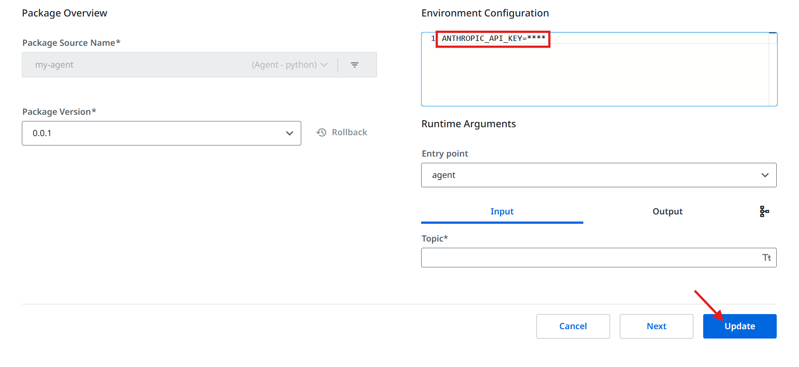
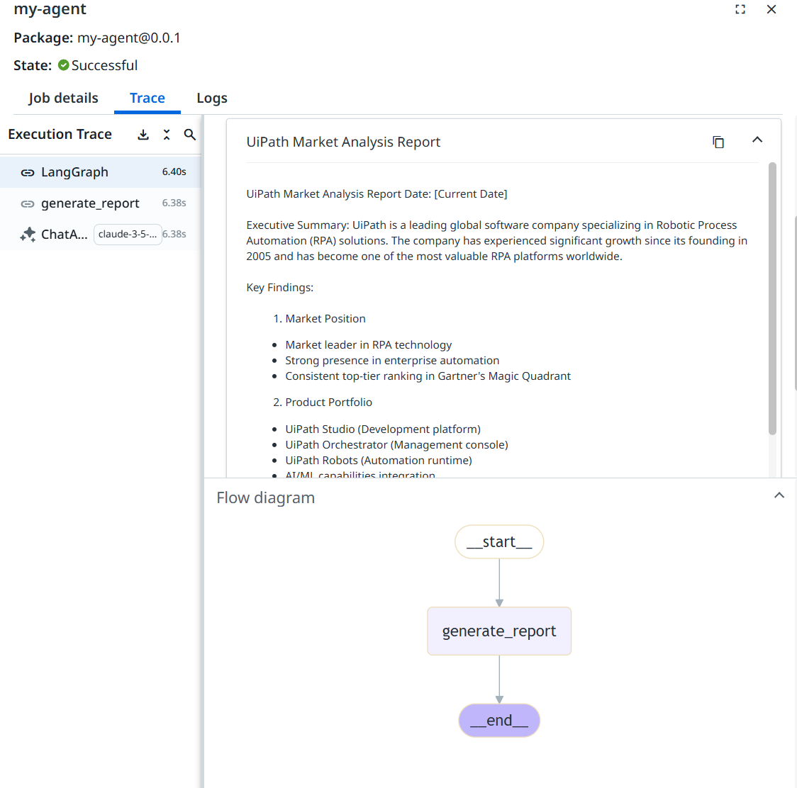

Quickstart Guide: UiPath LangChain Agents¶
Introduction¶
This guide provides step-by-step instructions for setting up, creating, publishing, and running your first UiPath-LangChain Agent.
Prerequisites¶
Before proceeding, ensure you have the following installed:
- Python 3.11 or higher
piporuvpackage manager- A UiPath Automation Cloud account with appropriate permissions
By default, the quickstart agent uses UiPath LLM Gateway, which provides access to any LLM provider without requiring API keys. Alternatively, you can configure your agent to connect directly to the LLM provider of your choice (such as Anthropic or OpenAI) by providing the appropriate API key as an environment variable.
For more details, see the Chat Models documentation.
Optional: Using alternative LLM providers
Creating a New Project¶
We recommend using uv for package management. To create a new project:
Creating virtual environment at: .venv
Activate with: source .venv/bin/activate
# Activate the virtual environment# For Windows PowerShell/ Windows CMD: .venv\Scripts\activate# For Windows Bash: source .venv/Scripts/activatesource .venv/bin/activate# Install the uipath packageuv add uipath-langchain# Verify the uipath installationuipath -lvuipath-langchain version 0.1.0
Create Your First UiPath Agent¶
Generate your first UiPath LangChain agent:
✓ Created 'main.py' file.
✓ Created 'langgraph.json' file.
✓ Created 'pyproject.toml' file.
💡 Initialize project: uipath init
💡 Run agent: uipath run agent '{"topic": "UiPath"}'
This command creates the following files:
| File Name | Description |
|---|---|
main.py |
LangGraph agent code. |
langgraph.json |
LangGraph specific configuration file. |
pyproject.toml |
Project metadata and dependencies as per PEP 518. |
Authenticate With UiPath¶
🔗 If a browser window did not open, please open the following URL in your browser: [LINK]
👇 Select tenant:
0: Tenant1
1: Tenant2
Select tenant number: 0
Selected tenant: Tenant1
✓ Authentication successful.
Initialize Project¶
✓ Created '.env' file.
✓ Created 'agent.mermaid' file.
✓ Created 'entry-points.json' file.
✓ Created 'bindings.json' file.
This command creates the following files:
| File Name | Description |
|---|---|
.env |
Environment variables and secrets (this file will not be packed & published) |
entry-points.json |
Contains the input/output and graph schemas of your graphs |
bindings.json |
Allows you to configure overridable resource bindings |
agent.mermaid |
Graph visual representation |
Run The Agent Locally¶
Execute the agent with a sample input:
[2025-04-29 12:32:07,689][INFO] ((), {'topic': 'UiPath', 'report': "..."})
This command runs your agent locally and displays the report in the standard output.
Warning
Depending on the shell you are using, it may be necessary to escape the input json:
Attention
For a shell agnostic option, please refer to the next section.
(Optional) Run The Agent with a json File as Input¶
The run command can also take a .json file as an input. You can create a file named input.json having the following content:
Use this file as agent input:
Deploy the Agent to UiPath Automation Cloud¶
Follow these steps to publish and run your agent to UiPath Automation Cloud:
(Optional) Customize the Package¶
Update author details in pyproject.toml:
Package Your Project¶
Name : test
Version : 0.1.0
Description: Add your description here
Authors : Your Name
✓ Project successfully packaged.
Publish To My Workspace¶
✓ Package published successfully!
⠦ Getting process information ...
🔗 Process configuration link: [LINK]
💡 Use the link above to configure any environment variables
Info
Please note that a process will be auto-created only upon publishing to my-workspace package feed.
Set the environment variables using the provided link:

Invoke the Agent on UiPath Automation Cloud¶
⠴ Starting job ...
✨ Job started successfully!
🔗 Monitor your job here: [LINK]
Use the provided link to monitor your job and view detailed traces.

(Optional) Invoke The Agent with a json File as Input¶
The invoke command operates similarly to the run command, allowing you to use the same .json file defined
in the (Optional) Run the agent with a .json file as input
section, as agent input:
Next Steps¶
Congratulations! You have successfully set up, created, published, and run a UiPath LangChain Agent. 🚀
For more advanced agents and agent samples, please refer to our samples section in GitHub.